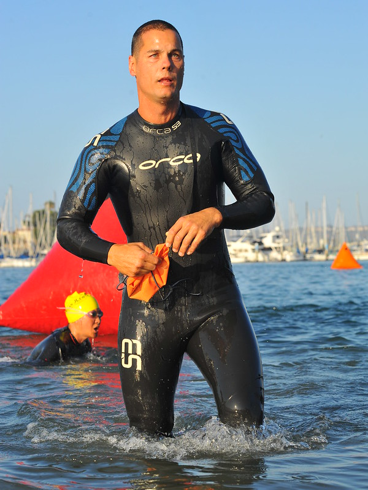

Hi! My name is Frederick Douglas (no relation) and I am the world's most avid
photographer of killer whales. I grew up in Manchester, New York where I gained a passion for photography
and everything with cameras from my awesome high school Photo teacher Mr. Nguyen. I majored in
Cinematography and Film/Video Production at Penn State and then began travelling the world. I love
documenting nature and its wonderful beauties through my art, but orcas have always been my favorite subject.
I hope you can learn a little more about these amazing creatures from my site. If you are interested in
private tutoring or just have questions about the industry, feel free to reach out!
